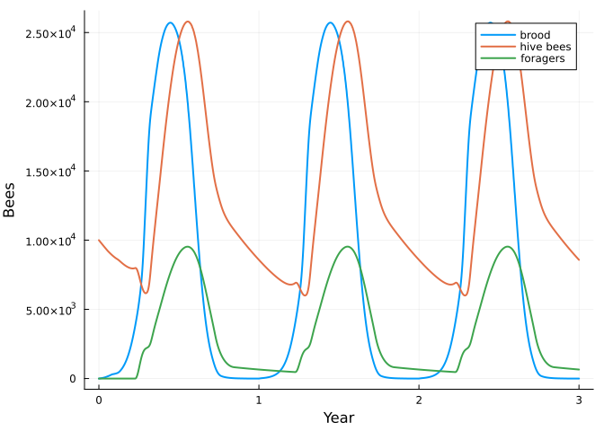
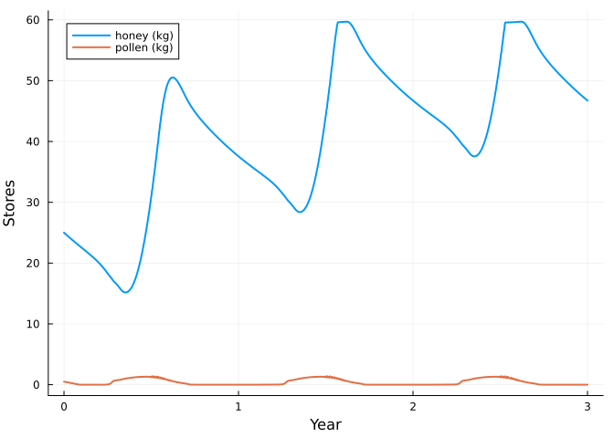

Bees 1: a honey bee colony from modules
Simon Frost
- A life cycle is a net
- Stage durations
- Responses
- Stores are another module
- A year in the life of the colony
- Freezing the colony
- What is provisional
- References
ENV["GKSwstype"] = "100"
using MatrixCommunityModels
using PlotsThis is the first of four vignettes that build a community of honey bees, Varroa mites, deformed wing virus and bumblebees. Each step adds one thing, and each thing is a small, named piece: a life-cycle net, a stage duration, a stratum, a response, or a pool. Nothing is a hand-written simulation loop.
A life cycle is a net
A honey bee worker is an egg for 3 days, a larva for 5 and a capped pupa for 12; she then works in the hive and later forages. The life cycle is a ValuedProjectionNet from CategoricalPopulationDynamics.jl: stages, and named transitions with a value each.
p = HONEYBEE_PARAMETERS
life = ValuedProjectionNet([:egg, :larva, :pupa, :hive, :forager],
:hatching => [(:egg => :larva) => p.egg_survival],
:capping => [(:larva => :pupa) => p.larva_survival],
:emerging => [(:pupa => :hive) => p.pupa_survival],
:hive_life => [(:hive => :hive) => 1 - p.hive_mortality],
:recruiting => [(:hive => :forager) => 1 - p.hive_mortality],
:foraging => [(:forager => :forager) => 1.0])
to_matrix(life)5×5 Matrix{Float64}:
0.0 0.0 0.0 0.0 0.0
0.97 0.0 0.0 0.0 0.0
0.0 0.99 0.0 0.0 0.0
0.0 0.0 0.999 0.996 0.0
0.0 0.0 0.0 0.996 1.0Stage durations
expand_stages gives each brood stage its duration in days. The names stay readable, and the old names remain usable as totals.
daily = expand_stages(ResponsiveProjectionNet(life), :egg => 3, :larva => 5, :pupa => 12;
ageing = Dict(:egg => p.egg_survival, :larva => p.larva_survival, :pupa => p.pupa_survival))
stage_names(daily)22-element Vector{Symbol}:
:egg1
:egg2
:egg3
:larva1
:larva2
:larva3
:larva4
:larva5
:pupa1
:pupa2
⋮
:pupa6
:pupa7
:pupa8
:pupa9
:pupa10
:pupa11
:pupa12
:hive
:foragertransition_names(daily)9-element Vector{Symbol}:
:capping
:egg_ageing
:emerging
:foraging
:hatching
:hive_life
:larva_ageing
:pupa_ageing
:recruitingResponses
The values above describe a bee in ideal conditions. What actually happens depends on the colony and the season, and each dependence is a response attached to a named transition: a function of a context ctx (the colony’s own stages ctx.n, any shared pools ctx.pool, and the day ctx.env) that scales the transition. For example, foragers die faster on days when they can fly:
flying(ctx) = flight_index(day_of_year(ctx.env))
example = respond(daily, :foraging => ctx -> 1 - p.hive_mortality - p.forager_mortality * flying(ctx))
winter, summer = context(example, zeros(22), NamedTuple(), 15), context(example, zeros(22), NamedTuple(), 200)
to_matrix(example, winter)[22, 22], to_matrix(example, summer)[22, 22](0.996, 0.896)honeybee() attaches the full set, each taken from a published colony model:
| Transition | Response | Source |
|---|---|---|
| eggs laid (an inflow) | queen’s seasonal laying rate, capped by the brood the adults can tend | HoPoMo; BEEHAVE |
larva_ageing | larvae are lost when pollen or nurses are short | HoPoMo |
recruiting, hive_life | hive bees become foragers, inhibited by foragers, faster when food is short; only on flying days while there is brood | Khoury et al. 2011, 2013 |
foraging | extra mortality on flying days | Russell et al. 2013 |
hive_life, foraging | starvation, and failure of very small colonies | Russell et al. 2013 |
The condition “while there is brood” is what produces winter bees: workers that emerge after brood rearing has stopped are never recruited to foraging, and so live for months.
Stores are another module
The colony’s honey and pollen are two more entries of its state, with their own transitions (honey_kept, pollen_kept: what is left after the day’s consumption) and inflows (what the foragers bring in). They are written as a separate net and merged into the bees with ⊕.
Drones are a third module: a second life cycle (drone_egg, drone_larva, drone_pupa, drone, lasting 3, 7 and 14 days as brood) on its own stages, merged in the same way. From late April to late August the queen lays one drone egg for every 25 worker eggs. Drones eat and need nursing but do no work; they are here because of what the next vignette adds.
colony = honeybee()
stage_names(colony, :honeybee)[[1, 4, 9, 21, 22, 23, 26, 33, 47, 48, 49]]11-element Vector{Symbol}:
:egg1
:larva1
:pupa1
:hive
:forager
:drone_egg1
:drone_larva1
:drone_pupa1
:drone
:honey
:pollentransition_names(system(colony)[:honeybee])18-element Vector{Symbol}:
:capping
:drone_capping
:drone_egg_ageing
:drone_emerging
:drone_hatching
:drone_larva_ageing
:drone_life
:drone_pupa_ageing
:egg_ageing
:emerging
:foraging
:hatching
:hive_life
:honey_kept
:larva_ageing
:pollen_kept
:pupa_ageing
:recruitingA year in the life of the colony
The time step is a day and the environment of each step is the day number. The colony starts on 1 January with 10,000 workers and 25 kg of honey (the BEEHAVE default).
sol = project(colony, honeybee_state(colony), 1:(365 * 3))
days = sol.t ./ 365
adults = stage_total(sol, :honeybee, [:hive, :forager])
plot(days, [stage_total(sol, :honeybee, [:egg, :larva, :pupa]) stage_total(sol, :honeybee, :hive) stage_total(sol, :honeybee, :forager)];
label = ["brood" "hive bees" "foragers"], xlabel = "Year", ylabel = "Bees", lw = 2)
second = 366:731
(peak_adults = round(Int, maximum(adults[second])), on_day = argmax(adults[second]),
winter_cluster = round(Int, adults[731]),
reared_per_year = round(Int, sum(stage_total(sol, :honeybee, :pupa12)[second])))(peak_adults = 35338, on_day = 203, winter_cluster = 9228, reared_per_year = 135062)Published colonies peak at 40,000 to 60,000 adults in July, overwinter with roughly 10,000 and rear 120,000 to 150,000 workers a year (Seeley; Russell et al. 2013). The model’s peak is a little below that range; the other two are within it.
plot(days, [stage_total(sol, :honeybee, :honey) ./ 1000 stage_total(sol, :honeybee, :pollen) ./ 1000];
label = ["honey (kg)" "pollen (kg)"], xlabel = "Year", ylabel = "Stores", lw = 2)
Freezing the colony
On any day the colony is an ordinary matrix model. frozen_net returns it as a net with that day’s values, so each number can be traced to its transition.
june = 365 + 160
net = frozen_net(colony, :honeybee, sol.u[june + 1, :], june)
(recruiting = transition_matrix(net, :recruiting)[22, 21], foraging = transition_matrix(net, :foraging)[22, 22],
hive_life = transition_matrix(net, :hive_life)[21, 21])(recruiting = 0.04240223802017676, foraging = 0.896, hive_life = 0.9535977619798232)In June a hive bee has about a 4% chance per day of becoming a forager, and a forager about a 10% chance per day of dying.
What is provisional
The honey budget needed one adjustment to balance: 0.14 g of honey per nectar forager per day, against 0.1 g per forager of any kind in Khoury et al. (2013) and Russell et al. (2013). The share of foragers collecting pollen, and the use of brood as the cue for recruitment, are modelling choices rather than published values. The climate behind flight_index is illustrative. HONEYBEE_PARAMETERS and the comments in src/bees.jl list every value with its source.
References
Khoury, D. S., Myerscough, M. R. & Barron, A. B. (2011). PLoS ONE 6, e18491; (2013) PLoS ONE 8, e59084. Russell, S., Barron, A. B. & Harris, D. (2013). Ecological Modelling 265, 158-169. Schmickl, T. & Crailsheim, K. (2007). HoPoMo. Ecological Modelling 204, 219-245. Becher, M. A. et al. (2014). BEEHAVE. Journal of Applied Ecology 51, 470-482.